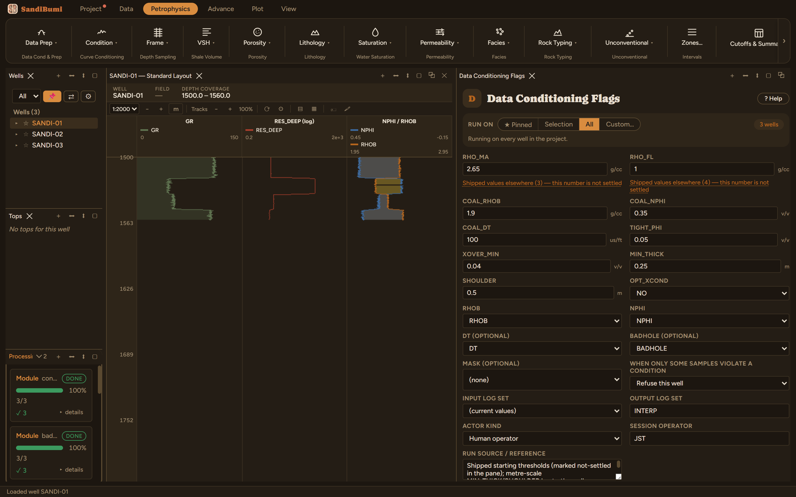

Data Conditioning Flags screens the porosity logs for the situations where
their readings are real but should not be interpreted as ordinary reservoir:
coal, tight streaks, gas crossover, and the shoulder samples around bed
boundaries. It writes one exclusion flag, COND_FLAG, plus a diagnostic flag per
cause, so you can mask on the combined flag while still seeing why each sample
was set aside. Run it after Bad-Hole QC, before the porosity and saturation
work begins.
The physics
Each cause is a recognisable log signature:
Coal: very low density and very high neutron together
(RHOB below COAL_RHOB and NPHI above COAL_NPHI, with the sonic criterion
where DT exists). Coal computes a spectacular porosity that is not
porosity.
Tight: density porosity below TIGHT_PHI. Not wrong, just not
reservoir, and a regression fitted through tight points drags.
Gas crossover: neutron reading below density porosity by more
than XOVER_MIN, the classic gas signature on a compatible-scale overlay.
Shoulders: within SHOULDER of a detected bed boundary, where both
tools average two rocks. MIN_THICK sets the thinnest bed the detector
honours.
The picks and why
The shipped thresholds are practitioner starting values, marked as such in
the pane; tune them against your own log views. Two picks deserve special
attention:
MIN_THICK 0.25 and SHOULDER 0.5 are thicknesses in the depth
curve's declared unit, metres here. On a feet project the same rock needs
feet-scale numbers; a thickness is an amount of rock, not a count of
samples.
OPT_XCOND decides whether gas crossover joins the exclusion
flag. The shipped NO keeps gas zones in the conditioned data, which is what
you want when the Gas Correction step will repair those samples; XCOND YES
is for studies that exclude gas intervals outright instead. Run live on
these wells: with NO, COND_FLAG sets 648 of 1185 samples and
XOVER_FLAG separately marks 265; switching to YES merges them and
COND_FLAG grows to 892 (648 + 265 minus a 21-sample overlap where a
crossover sample was already excluded for another cause). One option, a
fifth of the dataset moving in or out of the interpretation.
Step by step
Open Petrophysics ▸ Data Prep ▸ Data Conditioning Flags.
Review the thresholds against your rocks; leave OPT_XCOND on NO when a
gas correction will follow.
Fill the custody line and press Run Data Conditioning Flags.
Every threshold is a starting value and says so. The pane's
source notes name where each came from.
Reading the result
3 clean, COND_FLAG at 648 of 1185, XOVER_FLAG at 265.
Check the split per cause in the Database Inspector:
SELECT curve_name, COUNT(*) FILTER (WHERE value = 1) AS set
FROM computed_curves
WHERE curve_name IN ('COND_FLAG','COAL_FLAG','TIGHT_FLAG','XOVER_FLAG','SHOULDER_FLAG')
GROUP BY curve_name

The combined flag plus one diagnostic per cause: mask on the
first, read the others.
QC and pitfalls
XOVER_MIN's shipped 0.04 v/v is the same size as the sandstone
matrix-scale error. Convert the neutron's matrix convention first (the
Neutron Matrix Conversion chapter), or a limestone-units neutron in
sandstone will fake or hide crossover.
Overlay the flags on a log view before masking anything: coal picked up
by the tight criterion, or shoulders swallowing thin pay, are visible in
seconds there and invisible in a count.
COND_FLAG excludes; XOVER_FLAG (under the shipped OPT_XCOND NO) informs.
The Gas Correction chapter consumes XOVER_FLAG as its gate, which is why
the flags are separate curves.